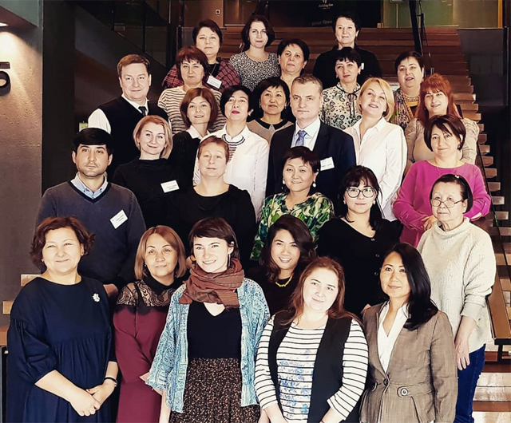

С 11 по 13 февраля 2019 г. в Тбилиси, Грузия, состоялся семинар для наставников по внедрению системы управления качеством в лаборатории. Семинар был организован Европейским Бюро ВОЗ в рамках инициативы «Хорошие лаборатории — крепкое здоровье».
С 11 по 13 февраля 2019 г. в Тбилиси, Грузия, состоялся семинар для наставников по внедрению системы управления качеством в лаборатории. Семинар был организован Европейским Бюро ВОЗ в рамках инициативы «Хорошие лаборатории — крепкое здоровье».
Цель инициативы: улучшить состояние здоровья населения посредством предоставления своевременных и точных лабораторных результатов, которым доверяет пользователь.
Проведённая ранее оценка работы лабораторий учреждений общественного здравоохранения в странах Центральной Азии и Восточной Европы выявила ряд общих проблем, влияющих на качество оказания медицинской помощи, среди которых неравномерное распределение ресурсов и плохая инфраструктура, неадекватная регуляторная и правовая база и отсутствие систем управления качеством и биологическими рисками, причём в первую очередь это относится к лабораториям, работающим в области эпидемиологического наблюдения за антибиотикорезистентностью.
В организации и работе семинара приняли участие сотрудники МАКМАХ и НИИ антимикробной химиотерапии Смоленского государственного медицинского университета Марина Витальевна Сухорукова и Илья Сулейманович Азизов.
От Российской Федерации в семинаре также участвовали члены МАКМАХ Я.А. Ахрименко, С.А. Егорова, М.А. Макарова и И.А. Нижегородцева. Среди участников семинара были представители Армении, Беларуси, Грузии, Казахстана, Кыргызстана, Таджикистана и Узбекистана.
В рамках трехдневной программы обсуждались основные принципы функционирования системы управления качеством в медицинских лабораториях в соответствии со стандартом ISO 15189, использование инструментов ПВКЛ (Пошагового Внедрения системы управления Качеством в Лаборатории), расширение программы наставничества на микробиологические лаборатории, проводящие определение чувствительности к антимикробным препаратам.
По общему заключение участников, подобные семинары, несомненно, способствуют повышению уровня компетентности специалистов, и, что не менее важно, создают исключительную возможность для установления неформальных взаимоотношений между коллегами для обмена опытом, способствуют развитию международного научного и лабораторного сотрудничества.
